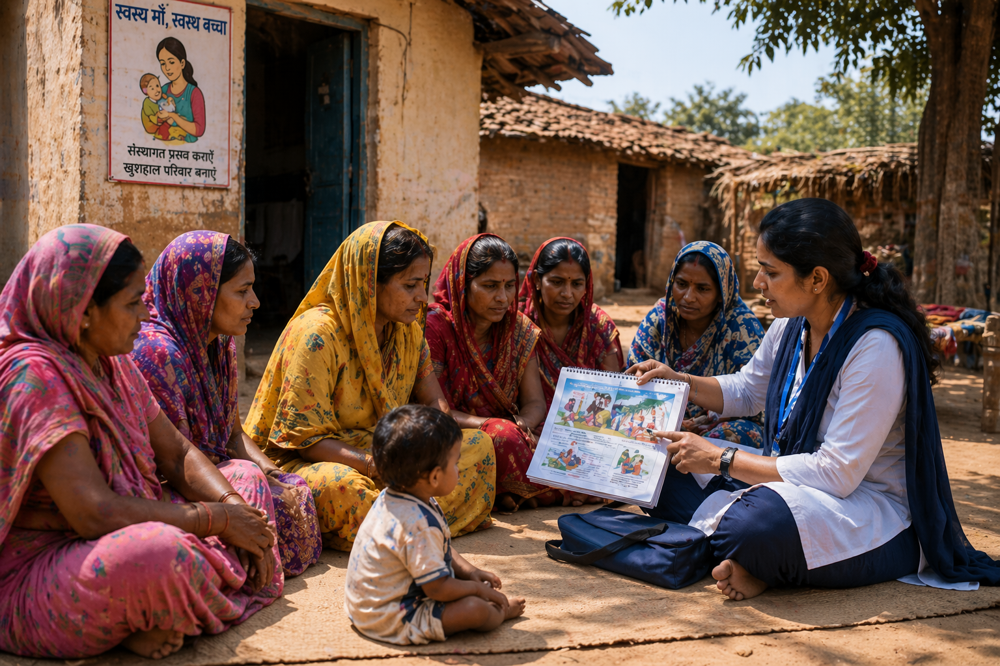

Maternal Health in India
A Study of Regional Inequalities and Healthcare Access
Introduction
Maternal health is often discussed using numbers such as mortality rates, institutional delivery percentages, and antenatal care coverage. These measures are important, but they do not always show the full picture. They often hide deeper issues such as unequal access to care, differences in healthcare facilities, and the everyday experiences of women in different parts of the country. In a country as large and diverse as India, these differences are not the same everywhere. Health outcomes change from one state to another and also differ between rural and urban areas, and they are influenced by income levels and social conditions.
Access to healthcare has improved over time, many gaps still remain, and these are connected to larger social and structural conditions. To understand maternal health, it is important to look beyond single indicators and study how access to healthcare, education, and living conditions work together to shape outcomes. It also requires understanding how these factors vary across regions and population groups, and why some areas continue to face greater challenges than others. Patterns can be examined using state-level indicators such as institutional delivery, antenatal care, and infant mortality rates to better understand regional differences in outcomes.
How much does access shape maternal health outcomes?


Problem Statement
While access to services has increased, the benefits are not evenly distributed, and some regions continue to experience poorer outcomes. These differences are influenced by factors such as healthcare availability, education levels, socioeconomic conditions, and regional inequalities in infrastructure and resources. The core problem is not just limited access, but a lack of understanding of how these factors interact to shape maternal health outcomes across regions. Using state-level indicators such as institutional delivery, antenatal care, financial access, and infant mortality rates, this study examines how these factors are associated with variations in outcomes across states. Without understanding these relationships, it becomes difficult to identify where interventions are most needed and how resources can be effectively allocated to reduce disparities.
Methodology
This project applies basic concepts from data science and database systems to study maternal health outcomes. Data is collected from multiple sources using APIs and combined using common fields such as state, allowing datasets to be connected and analyzed together. The NFHS dataset is filtered to retain relevant indicators such as institutional delivery, antenatal care, financial access, anaemia, and fertility, while the mortality dataset is used to extract infant mortality rate (IMR) as the primary outcome variable. The data is cleaned, standardized, and aggregated to ensure one observation per state before merging into a unified dataset. The analysis uses exploratory data analysis and visualization to identify patterns and trends in maternal health indicators, and examines relationships between healthcare access and health outcomes using correlation analysis, while recognizing that correlation does not imply causation. Indicators are used to compare states and examine how variations in access and socioeconomic conditions are associated with differences in maternal health.
Analysis
The data reveals a clear pattern that better access to healthcare is associated with improved outcomes. States with higher institutional delivery rates and stronger antenatal care coverage consistently show lower infant mortality rates (IMR), suggesting that access to formal healthcare services plays a key role in maternal and child health.
This relationship, however, is not uniform across all variables. Financial access does not show a strong or consistent relationship with IMR, indicating that having financial resources alone does not necessarily translate into better health outcomes. In contrast, demographic factors such as adolescent fertility are associated with higher IMR, pointing to underlying social and behavioral risks that influence outcomes.
There are also clear differences across regions. Some states perform significantly better than others, reflecting variations in healthcare infrastructure, accessibility, and broader socioeconomic conditions. These disparities suggest that improvements are not evenly distributed and that certain populations remain more vulnerable.
Explore the Data
Select a residence type and indicator to see how states compare.
Test a Scenario
Adjust the sliders below to see how shifts in healthcare access and demographic conditions are associated with changes in infant mortality across Indian states.
This tool uses a multiple linear regression model trained on NFHS-5 state-level data across India. It estimates how changes in three key healthcare indicators, institutional delivery rates, antenatal care coverage, and adolescent fertility, are associated with infant mortality rates (IMR). Each slider adjusts one variable while holding the others constant, letting you explore how different combinations of conditions relate to predicted outcomes. The model explains roughly 30% of the variation in IMR (R² = 0.30), meaning healthcare access is an important but not the only factor at play. Results are illustrative estimates intended to support understanding, not clinical or policy forecasts.
Summary
This study set out to understand how healthcare access shapes maternal and child health outcomes across Indian states. The data consistently shows that states with higher institutional delivery rates and stronger antenatal care coverage tend to have lower infant mortality, while high adolescent fertility remains a persistent risk factor. These patterns hold across both rural and urban populations, though the scale of the gaps between them points to structural inequalities that go beyond healthcare alone. States like Kerala and Tamil Nadu demonstrate that sustained investment in maternal health infrastructure can produce outcomes that stand apart from the national average, offering a reference point for what is achievable. At the other end of the spectrum, states such as Madhya Pradesh and Uttar Pradesh continue to face significantly higher infant mortality rates, underscoring how much ground remains to be covered.
The regression model reinforces what the visualisations suggest: improving access to safe childbirth and prenatal care has a measurable association with better outcomes, but no single indicator tells the full story. Regional disparities, socioeconomic conditions, and demographic factors all interact in ways that cannot be reduced to one variable. What the data makes clear is that progress is possible, uneven, and deeply tied to how resources and opportunities are distributed across the country. Addressing maternal and child health at scale will require not just expanding services, but ensuring those services reach the populations that have historically been left furthest behind. Ultimately, maternal health is an equity issue as much as a healthcare one, and the data makes clear that ensuring every individual has an equal chance at a safe outcome depends on how fairly resources, opportunities, and services are distributed across society.
Works Cited
National Institution for Transforming India (NITI Aayog). National Family Health Survey (NFHS-4 & NFHS-5) : State-wise Data. Accessed April 26, 2026. Link : https://ndap.niti.gov.in/dataset/6821
National Institution for Transforming India (NITI Aayog). Healthcare Access: Sample Registration System (SRS) Statistical Report. Accessed April 26, 2026. Link : https://ndap.niti.gov.in/collection/Sample%20Registration%20System%20(SRS)%20-%20Statistical%20Report/358
National Institution for Transforming India (NITI Aayog). Birth Rate, Death Rate, and Infant Mortality Rate by National Sample Survey Office (NSSO) Natural Division. Accessed April 26, 2026. Link : https://ndap.niti.gov.in/dataset/9343
National Institution for Transforming India (NITI Aayog). Child (Aged 0–4 Years) and Infant Mortality Indicators. Accessed April 26, 2026. Link : https://ndap.niti.gov.in/dataset/9355
National Institution for Transforming India (NITI Aayog). Fertility Indicators – State-wise. Accessed April 26, 2026. Link : https://ndap.niti.gov.in/dataset/9442